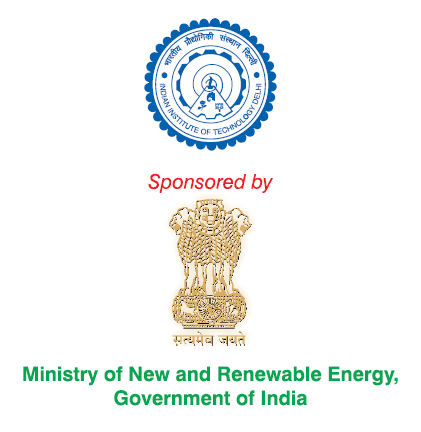
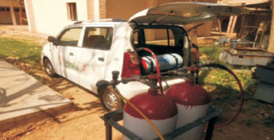
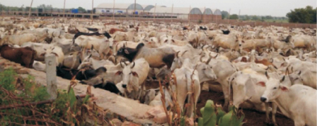
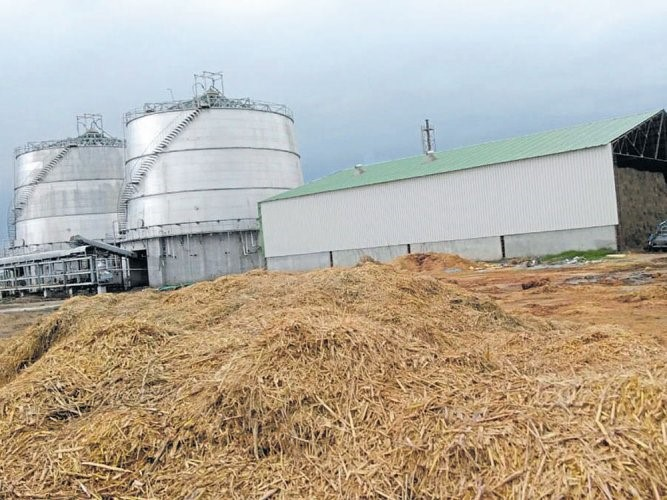

The Indian Institute of Technology Delhi (IITD) is committed to contributing innovative scientific and technical education and research to India and the world and serving as a valuable biogas resource for industry and society. IITD has taken the actions described below to mitigate methane.
 The IITD’s Biogas Development & Training Centre (BDTC) was established in 2008 in support of the Ministry of New and Renewable Energy under the National Biogas and Manure Management Program. The BDTC provides technical training and support to implement high-quality programs focused on research and development of biogas-related technologies.
BDTC supports State Nodal agencies in Uttar Pradesh, Haryana, Delhi, and Uttrakhand, and offers the following services:
BDTC has developed the following technologies to reduce methane emissions:

Figure 1. Compressed biogas being used for transportation fuel
BDTC is installing biogas enrichment and bottling systems in field sites and goshalas, which are protective shelters for cattle, across Jaipur, Jodhpur, Bikaner, and Bhilwada. These systems use cattle manure to produce biogas. After biogas is captured, carbon dioxide (CO2), hydrogen sulfide (H2S), and water vapor are removed using pressurized water. The enriched biogas is then compressed and stored in cylinders. The compressed biogas can be used to fuel buses, tractors, cars, auto rickshaws, or irrigation pump sets, and can also be used for other industrial applications.

Figure 2. Goshala
In addition, nutrients (nitrogen, phosphorus, and potassium) and micro-nutrients (zinc, iron, manganese, and copper) are conserved in a slurry and returned to the soil as fertilizer. The use of the slurry as a fertilizer has many advantages, including:
Installing commercial biogas production facilities in the northern states of India will significantly reduce the open-field burning of rice straw and other agricultural residues. The present use of paddy straw at the power plant in Fazilka, Punjab results in savings of approximately 120.0 gigajoules/day of energy, which would otherwise be released into the atmosphere by direct combustion. This project eliminates the release of atmospheric pollutants that result from burning paddy straw in farmers’ fields.
